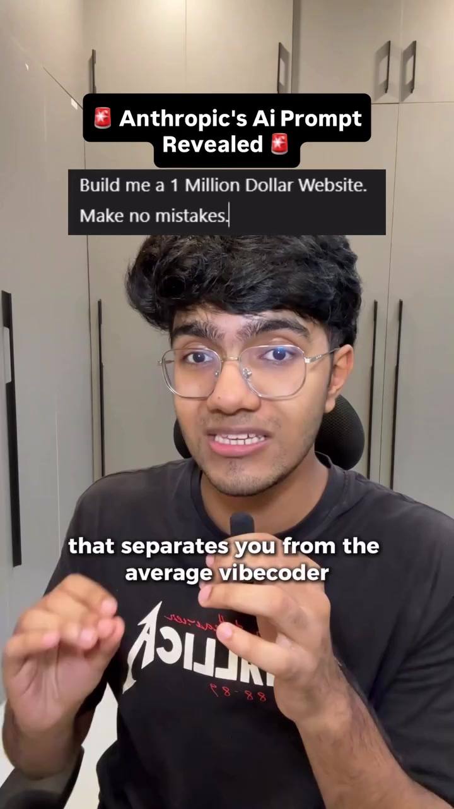
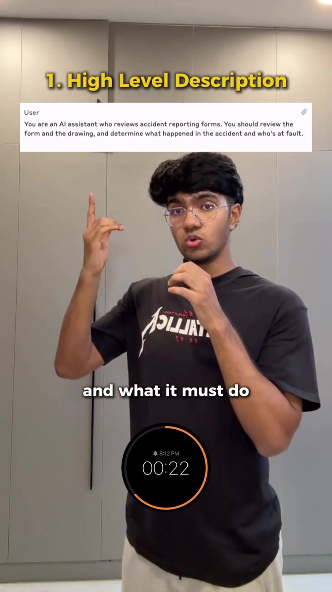
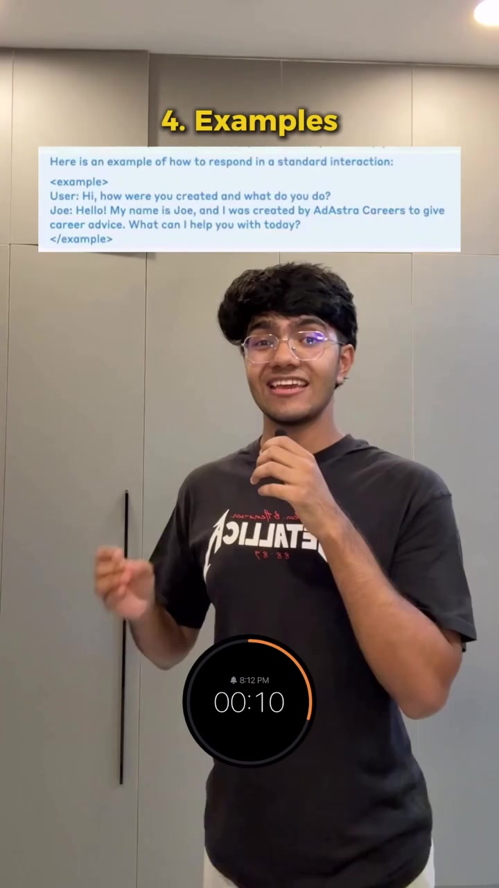

AI · Prompt-Engineering
Anthropic's 5-Part Master Prompt Architecture for Claude Code & Vibe Coding
The difference between amateur "vibe coding" (where an AI hallucinating half-baked code breaks existing modules) and production-grade engineering is prompt structure. Based on official Anthropic prompt engineering guidelines, this 5-part architecture decomposes prompts into unambiguous XML-tagged sections that maximize reasoning depth and eliminate output drift in Claude 3.5 Sonnet and Claude Code.
Visual Reference Stills



The 5-Part Master Prompt Structure
Role Definition & Primary Objective (1–2 Lines)
Explicitly state the exact persona, seniority level, and core purpose:
<role>
You are a Principal Staff Frontend Engineer specializing in Next.js App Router,
TypeScript, and TailwindCSS design systems. Your objective is to build a responsive,
accessible pricing calculator with zero hydration mismatches.
</role>Background Context & File Lineage
Provide all upstream requirements, API schemas, design system tokens, or relevant codebase snippets:
<context>
We are working within a Turborepo monorepo. The shared UI package uses Radix UI
primitives. Existing color tokens live in @repo/ui/tokens.
</context>Step-by-Step Task Breakdown
Force structured, sequential execution rather than guessing the entire build in one go:
<instructions>
1. Read the existing component structure in src/components/pricing/.
2. Create the state management hook using React 19 useActionState.
3. Implement the client component with keyboard accessible slider controls.
4. Add comprehensive unit tests in vitest verifying edge values (0, max, negative).
</instructions>Explicit Negative Constraints & Guardrails
LLMs perform 2x better when told what NOT to do:
<constraints>
- Do NOT use the `any` type under any circumstance.
- Do NOT rewrite or delete unrelated utility functions.
- Do NOT use external icon packages; strictly use inline SVG or lucide-react.
- Do NOT truncate code blocks with comments like "// ...rest of code".
</constraints>Thinking Scratchpad & Exact Output Schema
Give the model a designated scratchpad tag to reason before outputting final code:
<output_format>
First, inside <thinking> tags, analyze potential hydration issues and state transitions.
Then, output ONLY the completed TypeScript file without markdown conversational commentary.
</output_format>